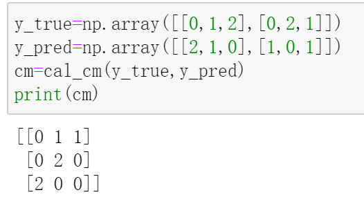
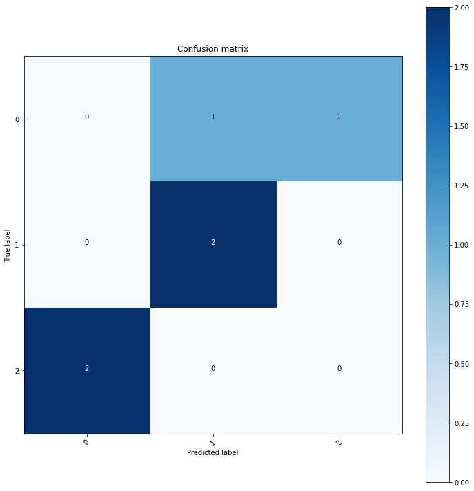
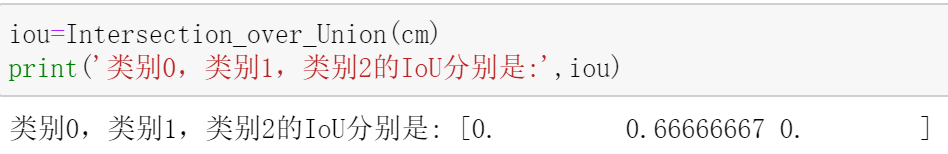

语义分割中的IoU理论讲解+PyTorch实现
语义分割中的IoU
之前的文章介绍过目标检测中的IoU，它等于预测框与真实框的交集区域面积除以并集区域面积。
在语义分割问题中，IoU经常被作为指标来评估模型学习的好坏。和目标检测中的IoU一样，语义分割中的IoU也是用预测结果和真实结果的交集除以并集。
只不过，语义分割问题并不像目标检测问题那样存在所谓的框，它通常是对每个像素进行分类，然后根据分类结果分别计算每个类别的交集和并集，从而进一步计算得到IoU。
因此，语义分割问题的IoU计算方式会与目标检测中IoU的计算方式会有所不同（两者思想一样，具体计算方式不一样）。
计算IoU需要预测类别和真实类别，后者是已知的，而前者需要模型去预测，再经过一些后处理得到。将模型预测值转为我们需要的预测类别的步骤（即：后处理过程）如下：
输入1张shape为C*H*W的图片，输出的shape为C'*H*W。C表示图片通道数，一般是3，C'表示语义分割问题的总类别数，比如一共有4类，那么C'=4。在C'所在维度上做个切片，比如C'[:,3,3]取了坐标为[3,3]的像素点在C'维度上的取值，该取值是一个长度为C'的向量，其取值最大元素所在下标便是[3,3]处像素点的预测分类结果。 对全部像素点执行以上操作，就得到了每个像素点的预测类别。
现在来举栗说明语义分割问题中IoU的一般计算过程：
假设总类别数为3，预测类别和真实类别如下：
1 | y_true=np.array([[0,1,2],[0,2,1]]) |
接下来将一步一步计算上述问题的IoU。
1. 获取混淆矩阵
预测类别的结果存储在shape为H*W的单通道图片中，不妨叫它y_pred；每个像素点真实的类别也存储在shape为H*W的单通道图片中，不妨叫它y_true。
根据y_pred和y_t，就可以计算它们之间的混淆矩阵了。
我们可以调用sklearn封装好的接口来计算混淆矩阵：
1 | from sklearn import metrics |

混淆矩阵是一个C'*C'的方阵(前面说过，C'代表总类别数)，将上面计算得到的混淆矩阵可视化出来是下面这样的：

这是一个3分类问题的混淆矩阵，纵轴上是真实类别，横轴上是预测类别。
这里简单解读一下这个混淆矩阵：
看第一行的
[0,1,1]，第一列的0表示真实类别为0，且预测类别为0的样本点数为0；第二列的1表示真实类别为0，且预测类别为1的样本点数为1；第三列的1表示真实类别为0，且预测类别为2的样本点数为1；第二、三行类似。
看第一列的
[0,0,2]，第一行的0表示预测类别为0，且真实类别为0的样本点数为；第二行的0表示预测类别为0，但真实类别为1的样本点数为0；第三行的2表示预测类别为0，但真实类别为2的样本点数为2；第二、三列类似。
2. 计算IoU
得到混淆矩阵后，就可以着手计算IoU了。
前面已经计算得到混淆矩阵(cm)如下：
1 | [[0 1 1] |
要计算IoU，就要计算每个类别对应的交集和并集。
对于交集，直接取混淆矩阵的对角线元素，这里就是[0,2,0]，它代表了各个类别中被预测正确的样本点数：
从左到右看
[0,2,0]，0表示真实类别为0，且预测类别为0的样本点数；2表示真实类别为1，且预测类别为1的样本点数；0表示真实类别为2，且预测类别为2的样本点数；
对于并集,
求类别0的并集：
对于真实类别0，它有可能被预测为类别0,类别1,类别2，这里被预测为类别0，1，2的样本数为分别是0，1，1（看混淆矩阵第一行），加起来总共为0+1+1=2；对于预测得到的类别0，它本身真实的类别有可能是类别0，类别1，类别2，这里真实类别为0，1，2的样本数分别是0，0，2（看混淆矩阵第一列），加起来为0+0+2=2.
由于第一行之和与第一列之和都包含对角线处的元素(这里是0)，因此并集等于sum(第一行之和，第一列之和)-对角线元素，也就是(0+1+1)+(0+0+2)-0=4
求类别1的并集：
对于真实类别1，它有可能被预测为类别0,类别1,类别2，这里被预测为类别0，1，2的样本数为分别是0，2，0（看混淆矩阵第二行），加起来总共为0+2+0=2；对于预测得到的类别1，它本身真实的类别有可能是类别0，类别1，类别2，这里真实类别为0，1，2的样本数分别是1，2，0（看混淆矩阵第二列），加起来为1+2+0=3.
由于第二行之和与第二列之和都包含对角线处的元素(这里是2)，因此并集等于sum(第二行之和，第二列之和)-对角线元素，也就是(0+2+0)+(1+2+0)-2=3
对于类别3同理可求得并集为3.
经过上述操作，我们已经计算得到类别0，1，2各自的交集为[0,2,0]，并集为[4,3,3]，用交集除以并集(逐元素做除法)，就得到了每个类别的IoU，即：[0/4,2/3,0/3]=[0,0.666,0].
Python代码实现IoU的计算
现在用代码来实现上述IoU计算过程。
1 | def Intersection_over_Union(confusion_matrix): |
这几句代码便实现了上述计算过程，我们可以用刚才的栗子测试一下：

除去舍入误差，这和我们手动计算的结果是一致的。
得到每个类别的IoU之后，还可以进一步求解mIoU，它等于每个类别的IoU的均值，具体实现时，只需在代码后面加一个取均值操作即可：
1 | def Mean_Intersection_over_Union(confusion_matrix): |
参考：